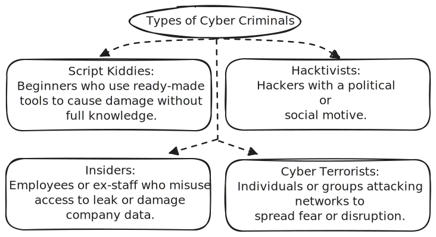

Cybersecurity Foundations and Legal Framework
├── 1. Introduction to Cyber Law
│ ├── Cyber
│ ├── Cyber Crime
│ ├── Cyber Criminals
│ └── Cyber Law
│
├── 2. Object and Scope of the IT Act
│ ├── Genesis of the Act
│ ├── Object of the Act
│ ├── Scope of the Act
│ ├── E-Governance and the IT Act 2000
│ ├── Legal Recognition of:
│ │ ├── Electronic Records
│ │ └── Digital Signatures
│ └── Use of Electronic Records and Digital Signatures in Government and its Agencies
│
├── 3. IT Act in Detail
│ └── (Expanded view of sections, authorities, penalties, procedures, etc.)
│
├── 4. Basics of Network Security
│ ├── IP Addresses
│ ├── Port Numbers and Sockets
│ └── Hiding and Tracing IP Addresses
│
├── 5. Scanning Techniques
│ ├── Traceroute
│ ├── Ping Sweeping
│ ├── Port Scanning
│ └── ICMP Scanning
│
└── 6. Fingerprinting
├── Active Fingerprinting
├── Passive Fingerprinting
└── Email-Based Fingerprinting
As we move deeper into the digital age, our dependence on the internet has grown — from chatting with friends and making payments online to storing important files on cloud services. But just like we have laws to regulate actions in the physical world, we need rules for the virtual world too. That’s where Cyber Law comes in. Before we understand what it means, let’s take a step back and look at the world we are dealing with — the cyber world.
The term "cyber" refers to anything related to computers, networks, and the internet. It's the virtual space where all digital activities happen — from browsing websites and sending emails to managing online bank accounts.
Now, just like in the real world, not everyone uses cyberspace responsibly. Some people misuse it to harm others, steal information, or cheat systems — these actions are called cyber crimes.
Cyber criminals are people or groups who use computers, networks, or the internet to commit illegal activities. Their main goal is often to steal data, money, or disrupt systems. They can target individuals, companies, or even governments.
With all the potential threats and crimes in cyberspace, there must be a legal framework to prevent misuse, protect users, and punish wrongdoers. This is what Cyber Law (also known as Internet Law or IT Law) does.
So in short, as our online presence grows, the need for awareness and understanding of cyber law becomes more important than ever — not just for legal experts, but for students, businesses, and everyday internet users like us.
Imagine a time before 2000 — people relied heavily on paper for communication, contracts, and records. As internet usage started growing in India, more people began using emails, online payments, and digital documents. But there was a big legal problem: the law didn’t recognize anything electronic as "official" or "valid." This gap led to the creation of a new law — the Information Technology Act, 2000, often referred to as the IT Act.
The IT Act was India’s answer to the legal challenges of the digital world. It was passed in the year 2000 to support e-commerce, recognize digital transactions, and protect users online. The need became urgent because global trade and business were moving online, and India needed a legal structure to keep up with the rest of the world.
The core purpose of the IT Act is to give legal recognition to digital records and digital signatures, and to promote secure and efficient electronic communication. The Act ensures that transactions made via computers or the internet are legally valid and enforceable in a court of law.
The IT Act doesn’t just deal with cyber crimes — its scope is quite wide. It applies to both individuals and organizations who use computers or networks. Whether you're sending an email, signing a digital contract, or storing files on the cloud, you are under the scope of this law.
One of the major focuses of the IT Act is promoting e-governance. That means making government services accessible online — like applying for passports, paying taxes, or checking exam results — to save time, reduce corruption, and improve transparency.
Before the IT Act, only paper-based records were considered official in court. Now, thanks to the Act, electronic files like PDFs, emails, scanned documents, or anything stored digitally are treated as valid records.
Just like we sign physical documents using ink, digital documents are "signed" electronically. The IT Act gives legal recognition to digital signatures, making them valid proofs of identity and consent.
With the IT Act in place, governments can now go paperless for many services. From issuing birth certificates to filing taxes, departments can use electronic records and digital signatures to handle official work securely and efficiently.
So overall, the IT Act acts as the backbone of India’s digital legal system. It ensures that as we move toward a paperless and tech-driven future, our rights, data, and identity are protected under the law — just like they would be in the real world.
The Information Technology (IT) Act, 2000 was India’s first major step toward regulating activities in the digital world. It was originally meant to give legal recognition to electronic records and digital signatures, but over the years, it has evolved into a full-fledged legal framework for dealing with various cyber-related challenges — from data protection to cybercrime.
To understand the IT Act properly, we need to look at how it’s structured, who enforces it, what kinds of digital offenses it deals with, and how justice is delivered. Let’s explore each part in a simple and logical way.
Like any detailed law, the IT Act is divided into different parts to cover specific areas. It consists of several Chapters and Sections that make it easier to handle various digital issues — from authentication to punishment.
For any law to work effectively, there must be people and institutions responsible for enforcing it. The IT Act defines several key authorities who play a role in maintaining cyber law and order in India.
The IT Act addresses both civil offenses (where there may be no criminal intention) and criminal offenses (which involve deliberate harm, fraud, or misuse).
To make sure people take the law seriously, the IT Act includes a mix of financial penalties and prison sentences based on how serious the offense is.
The IT Act doesn't work in isolation — it collaborates with laws like the IPC and CrPC. Specialized police units known as Cyber Crime Cells handle investigations and legal action.
In 2008, the IT Act was amended to deal with newer challenges like data privacy, cyber terrorism, and stronger punishments for digital crimes. This made the law more modern and robust.
In Summary: The IT Act started with a simple goal — legalizing digital signatures and records. But today, it’s a key pillar of India’s cyber law. From protecting your personal data to punishing cyber criminals, it helps ensure our digital space remains safe and accountable.
3C:52:82:0A:65:AC and is used only within the local network. The switch maintains a
table
of these MAC addresses to decide which computer is on which port, so it can send data directly
to
the
correct system without flooding the entire network.
drive.google.com. But your computer doesn’t know the actual IP address of Google’s
server,
so it first contacts a DNS server — like looking up a phonebook — to get the
real
IP
address of the website. For example, Google Drive might resolve to something like
142.250.67.14.
192.168.1.10), but now we are shifting to IPv6, which is 128-bit,
because
the number of devices worldwide has grown rapidly.
443802151004) to identify this session.
142.250.67.14:443 is a socket — it represents a connection to Google Drive’s secure
service. Likewise, your computer’s side might be represented as something like
192.168.1.5:51004. Both sides now have sockets, and a session is established
between
them
for file transfer.
drive.google.com to its IP.443 to talk to Google Drive.ipconfig (on Windows) or ifconfig (on
Linux),
you can see your device’s MAC address and current IP address. This confirms how your system is
uniquely
identified both locally (by MAC) and globally (by IP).
Till now, we’ve understood how communication happens between devices over the internet using concepts like IP addresses, port numbers, and sockets. We saw how every device is assigned a unique logical address (IP) that helps identify it on the network. But that also means — anyone communicating with your device knows your IP. Now, in the world of networking and security, this leads us to two important needs: hiding your IP and tracing someone else's IP. Let's explore why and how both are done.
Let’s say you’re browsing a website, or uploading something to Google Drive — your public IP address is visible to the other side. In general cases, this is harmless. But in situations where you want to protect your identity or location (for privacy or security reasons), IP hiding becomes useful.
On the other side of the story is IP tracing. Sometimes for security, legal, or investigative purposes, there’s a need to find out the source of a connection — who sent a suspicious packet? Where did an attack come from?
tracert (Windows) or traceroute (Linux):
Shows
path packets take to reach a destination.ping: Confirms if a host is reachable and how long it
takes.whois: Fetches ownership and location info about an IP
address.So overall, hiding IP is about staying anonymous and secure, while tracing IP is about finding the origin of communication — both are key parts of network security. The goal isn't just to understand addresses like IP and ports, but also to know how they play a role in both protecting and investigating our digital communication.
ipconfig or ifconfig to
view MAC and IP addresses.tracert, ping, whois), packet sniffing (Wireshark), log
analysis.In cybersecurity and ethical hacking, simply knowing a device is present on a network isn’t enough. We also need to understand how it behaves, what services it runs, and where its vulnerabilities lie. Scanning techniques help us gather this critical information about systems and networks, often as part of the reconnaissance phase during security testing.
Imagine you are responsible for securing a campus network. You know devices are connected, but you don’t know which ones are active, what ports they have open, or what operating systems they run. Scanning helps create a clear map — identifying active devices, open ports, and potential weak spots. Since attackers use these same techniques to plan their attacks, defenders must understand and use them effectively.
Let’s explore the main scanning techniques used to gather detailed network information. Each plays a unique role in understanding and securing networks.
Traceroute acts like a GPS for your data packets. Instead of traveling straight, packets hop through multiple routers on their way across the internet. Traceroute helps visualize this path.
From a security standpoint, traceroute reveals which routers and firewalls your data passes through, helping you understand the network’s layout.
Before examining specific ports or services, you need to know which devices are online. Ping sweeping sends ICMP Echo Requests (like a ping) to multiple IP addresses to discover live hosts.
Because of these limitations, ping sweeping is just the starting point in scanning.
Once a device is confirmed online, the next step is to check what services it offers. Port scanning sends requests to a range of ports to see which ones are open, closed, or filtered.
This technique is vital for both attackers and defenders since open ports can be entry points into the system.
Beyond simple pinging, ICMP scanning uses various ICMP message types to gather more nuanced information about hosts.
While quieter than port scanning, ICMP scanning can be less reliable because modern firewalls often filter out these messages.
These scanning methods — traceroute, ping sweep, port scan, and ICMP scan — complement each other to form a layered investigation. First, identify live hosts (ping/ICMP), then map their network path (traceroute), and finally examine their open ports and services (port scanning). For ethical hackers, mastering these techniques is essential for vulnerability assessment. For system administrators, this knowledge helps in securing networks by closing potential entry points.
After scanning a network to find active systems and open ports, the next step in understanding a target is fingerprinting. Think of it like digital detective work — just like a fingerprint can identify a person, digital fingerprinting reveals the identity and behavior of a device or system. It helps attackers (and ethical hackers) understand what operating system, software, and services a target is using — without needing direct access.
Fingerprinting is crucial for tailoring attacks or security audits. For example, knowing whether a server runs Linux or Windows can help determine what vulnerabilities might exist. There are multiple types of fingerprinting, each with its own approach and level of stealth.
Active fingerprinting involves directly interacting with the target system. It’s like knocking on someone's door and watching how they respond — except here, you're sending specially crafted network packets and analyzing the replies.
In real-world ethical hacking or pentesting, active fingerprinting is used when stealth isn’t a priority, or during a thorough audit when permission has been granted.
Passive fingerprinting is a quieter, stealthier method. Instead of probing a system directly, it listens to network traffic that’s already happening — like eavesdropping on a conversation instead of starting one.
In environments like corporate LANs or monitored networks, passive fingerprinting is a go-to method for ethical monitoring and quiet reconnaissance.
Email-based fingerprinting is slightly different — it focuses on gathering system information through emails and the headers they carry. Emails can leak details about the sender’s environment unknowingly.
Email-based fingerprinting often comes into play during cybercrime investigations or spam filtering setups, where identifying the source of malicious or suspicious email traffic is necessary.
Together, these fingerprinting techniques build a profile of the target system or user — whether through active probes, passive monitoring, or by analyzing something as simple as an email. Understanding them is essential for both securing networks and auditing vulnerabilities.